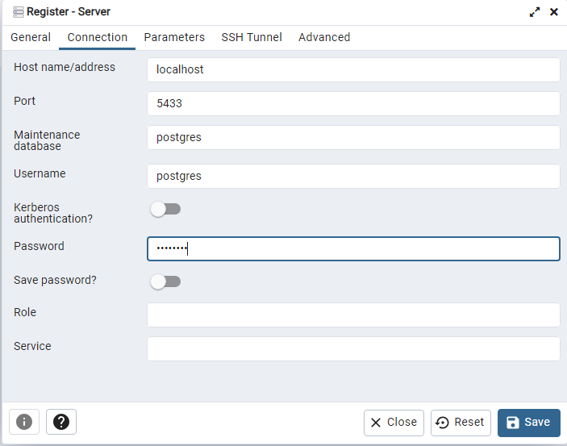
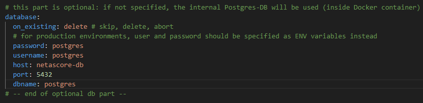
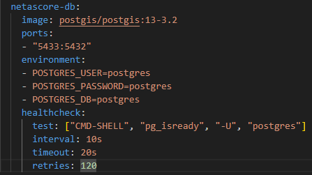

Advanced Docker customisation#
In addition to the running NetAScore in a Docker environment, there are a lot of options for customisation when using Docker with NetAScore:
Build the Docker image from source#
The easiest way to build and launch NetAScore is by using docker compose. The docker-compose.yml inside the main code directory is configured accordingly. Therefore, the only command you need to execute should be:
docker compose build
Then, once you are sure that all input datasets, settings and mode profile files are properly placed inside the data subdirectory, execute NetAScore:
docker compose run netascore data/<your_settings_file>.yml
The manual, stepwise approach#
You can build the Docker image yourself from source using the following command from within the main code directory:
docker build -t netascore .
This builds a local docker image named netascore.
To manually create a network for communication between NetAScore and the PostgreSQL database running in Docker execute the following (required only once per computer):
docker network create netascore-net
Then, to run the workflow, first start the PostgreSQL database and attach it to the network:
docker run --name netascore-db --network=netascore-net \
-e POSTGRES_PASSWORD=postgres -d postgis/postgis:13-3.2
# Map TCP port 5432 in the container to port 5433 on the Docker host:
docker run --name netascore-db --network=netascore-net -p 5433:5432 \
-e POSTGRES_PASSWORD=postgres -d postgis/postgis:13-3.2
Make sure that the database connection in your settings.yml is set up to use the Docker network:
database:
host: netascore-db
port: 5432
dbname: postgres
username: postgres
password: postgres
Make sure that you have all necessary geofiles, settings and mode profile files in the data subdirectory, because this directory is mounted into the netascore container:
# linux and mac:
docker run -i -t --network=netascore-net \
-v $(pwd)/data:/usr/src/netascore/data netascore data/settings.yml
# windows:
docker run -i -t --network=netascore-net \
-v %cd%/data:/usr/src/netascore/data netascore data/settings.yml
Advanced configuration#
Only the database runs in docker#
If the database runs in docker, then you have to configure your database to accept connections from the local machine:
docker run --name netascore-db --network=netascore-net -p 5432:5432 \
-e POSTGRES_PASSWORD=postgres -d postgis/postgis:13-3.2
Your database section in the settings file should point to the local port which is mapped to the database on localhost:
database:
host: localhost
port: 5432
dbname: postgres
username: postgres
password: postgres
Now you can use the python script as described in the README.md.
Only the script runs in docker#
If the script runs inside the docker container, it needs access to the database outside of the docker ecosystem. If the external database runs on another host, provide the necessary connection information in the database section. If you have the database running on your local system, then the host needs the IP address or hostname of the local system. Please note that 127.0.0.1 or localhost will not work, because it would try to connect to the container’s localhost. If you are unable to obtain the ip of your
machine, or you cannot establish a connection, use gateway.docker.internal* as the host, e.g.:
database:
host: gateway.docker.internal
port: 5432
dbname: postgres
username: postgres
password: postgres
* If this does not work out for you, you can also try using `host.docker.internal` as the host.
Access the docker database through a local PostgreSQL-Instance:#
If you want to see or access the data stored in the Docker-DB-Instance you can do so using Postgres or PGAdmin.
First run NetAScore through docker once, to start up the processes neccessary. Afterwards check if the run was successful and if the Docker Container is active.
Continue in PGAdmin and register a new server (Servers>Register>Server…).
Name your instance netascore-db and implement the following settings in the Connection-tab:
set the host to: localhost
set the port to 5433
the password and the user both to postgres
save

Also adapt your settings-file in the database section accordingly:

The database should now be visible and contain the data of the last case you ran.
If you want to use a different password or username and another port, this can be configured in your docker_compose.yml-file.

The port-Section specifies the internal mapping between the port in the Docker container and the one of the local DB-Instance and the environment-settings specify the credentials for the Docker-DB.
Troubleshooting and performance improvement#
Performance when running NetAScore in Docker#
When using NetAScore in a docker image on mac or windows, overall performance of the pipeline can be 3-5 times slower compared to executing NetAScore in local Python or in Docker on Linux. This is caused by slow docker volume mounts and might be an issue for computations on large input files. To resolve this issue, you can either execute the python script on your machine (outside Docker) or copy the files into a volume using the following steps:
docker volume create netascore-storage
docker create -t --network=netascore-net --name netascore-pipe \
-v netascore-storage:/usr/src/netascore/data netascore data/settings.yml
docker cp data/. netascore-pipe:/usr/src/netascore/data
docker start netascore-pipe
To monitor the progress (logs), run:
docker logs -f netascore-pipe
This command will show the logs of the container and will follow the logs. You can stop the command with ctrl+c.
To copy the resulting files back to your local system, you can use the following command:
docker copy netascore-pipe:/usr/src/netascore/data/YOUR_RESULT_FILE1.gpkg .
docker copy netascore-pipe:/usr/src/netascore/data/YOUR_RESULT_FILE2.gpkg .
Memory issues with large datasets#
In case you experience errors when processing large datasets, please make sure that you have enough memory and disk space available.
Furthermore, it might be necessary to dedicate more memory to the database container. This can be done by adding the following line to docker-compose.yml within the section netascore-db (adjust the amount of memory to your needs):
shm_size: 2gb
Then, the netascore-db-section of docker-compose.yml should look like this:
netascore-db:
image: postgis/postgis:13-3.2
shm_size: 2gb
ports:
- "5433:5432"
environment:
- POSTGRES_USER=postgres
- POSTGRES_PASSWORD=postgres
- POSTGRES_DB=postgres
healthcheck:
test: ["CMD-SHELL", "pg_isready", "-U", "postgres"]
interval: 10s
timeout: 20s
retries: 120
Overwrite default.style for OSM import to database#
For importing OpenStreetMap data into the database, NetAScore uses osm2pgsql. Import settings for this commandline utility are provided in a default.style file. By default, NetAScore provides this file within its Docker container. In order to customize default.style settings you may perform the following steps:
copy the file from this repository (
resources/default.style)adapt the settings according to your needs
mount the settings file into the docker container when running it
# linux and mac:
docker run -i -t --network=netascore-net \
-v $(pwd)/default.style:/usr/src/netascore/resources/default.style \
-v $(pwd)/data:/usr/src/netascore/data netascore data/settings.yml
# windows:
docker run -i -t --network=netascore-net \
-v %cd%/default.style:/usr/src/netascore/resources/default.style \
-v %cd%/data:/usr/src/netascore/data netascore data/settings.yml